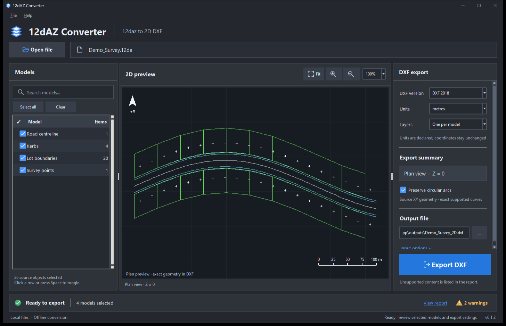
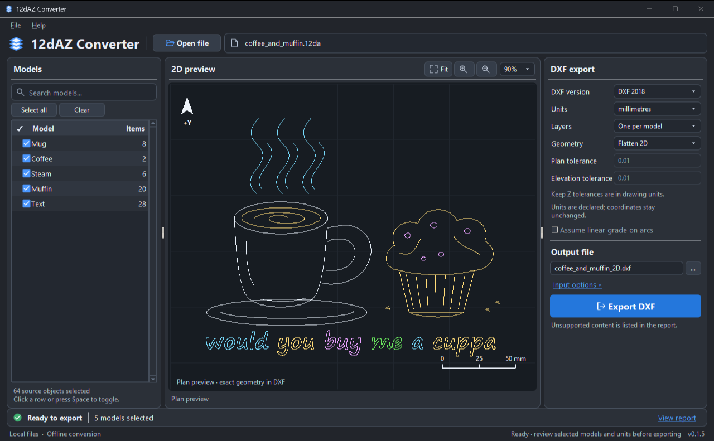

Choose your models
Open a .12daz archive or .12da file, review the plan preview and select the models you want to export.
Turn your .12daz and .12da files into 2D DXF 2018. Preview your models, choose what to export, and keep your work on your own computer.


01 / THE TOOLKIT
Just the tools you need to move supported survey geometry into an editable drawing.
Open a .12daz archive or .12da file, review the plan preview and select the models you want to export.
Preserve source XY coordinates and supported circular arcs. Geometry is flattened to Z = 0 for a 2D drawing.
Get DXF 2018 with one layer per model, plus a conversion report that explains omissions and style substitutions.
The desktop application converts files on your computer. No survey uploads, accounts or online conversion service.
02 / THE WORKFLOW
No 12d Model, AutoCAD or Python installation needed.
Download the Windows ZIP and extract the whole archive. Keep the
_internal folder beside the executable.
Run 12dAZ-Converter.exe and open your .12daz or
.12da file.
Explore the plan preview, select your models and choose drawing units and a DXF destination.
Export the DXF and review warnings. A
.dxf.conversion.json report is saved beside your
drawing.
Unit selection declares drawing units. It does not rescale your coordinates or transform the coordinate system.
03 / KNOW YOUR OUTPUT
Built for supported plan geometry. Always check the conversion report before using your drawing.
Straight and circular segments in supported super strings and legacy strings; XY arcs and circles; point strings; basic single-line world-size text; and solved horizontal super-alignment geometry with supported segments.
Source XY is preserved. Output is DXF 2018, flattened to Z = 0.
TINs, meshes, drainage, transition curves, symbols, rendered annotations and paper/screen-size text are not implemented. Civil semantics and alignment labels are omitted. Custom colours, styles and fonts may be substituted.
Objects containing unsupported curves are skipped whole. DWG export is future work.
04 / GET STARTED
Download 12dAZ Converter for Windows.
Free to use.
MIT-licensed source.
Extract the complete ZIP, then run12dAZ-Converter.exe.
Finding it useful? Help support development.
Buy me coffee05 / A FEW DETAILS
No. The packaged Windows application includes its runtime and does not require those applications to convert supported geometry.
No. Conversion takes place locally in the desktop application. This website does not accept survey files.
No. The output is a 2D plan drawing. Source XY coordinates are preserved and Z is flattened to zero.
The current output is DXF 2018. DWG export is future work.
No. Selecting units declares the drawing units without rescaling coordinates. There is no automatic scaling or coordinate-system transformation.
Open an issue on GitHub with a description of the problem and relevant warnings. Do not post private survey files or sensitive project data.

12dAZ CONVERTER
If 12dAZ has helped with your next drawing, a cuppa is a lovely way to support its development.
Buy me a cuppaAlways optional. Thank you for your support.